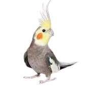
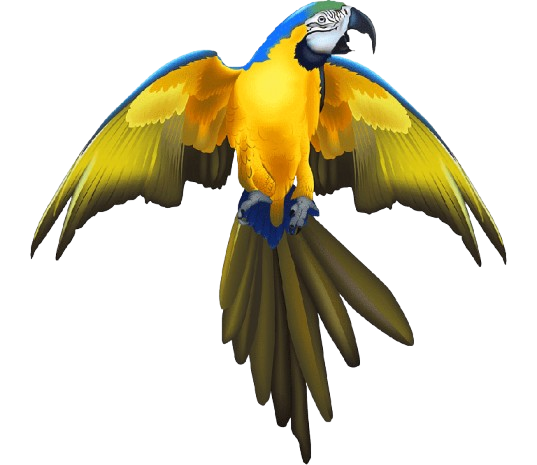
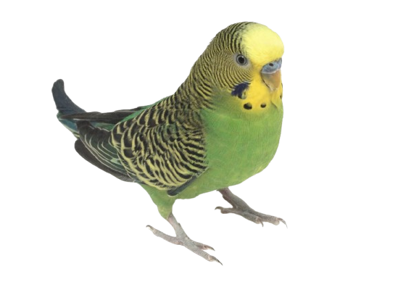

Papagaiļi


Papagaiļi, papagaiļveidīgie (Psittaciformes) ir viena no putnu klases (Aves) kārtām, kas pieder papagaiļu un zvirbuļu virskārtai (Psittacopasserae). Tā apvieno 398 putnu sugas, kas tiek iedalītas 4 dzimtās, bet tās savukārt 3 virsdzimtās. Papagaiļveidīgo putnu tuvākie radinieki ir zvirbuļveidīgie (Passeriformes).
Papagaiļi, līdzīgi kā kraukļi, vārnas, sīļi un žagatas, ir vieni no inteliģentākajiem putniem pasaulē. Vairākas sugas spēj imitēt cilvēka balsi, tādēļ tās kļuvušas par populāriem mājas mīluļiem. Papagaiļi parasti dzīvo ilgāk nekā lielākā daļa citu dzīvnieku. Ir reģistrēts, ka papagailis nodzīvojis pat 82 gadus. Daudzu papagaiļu sugu izdzīvošana mūsdienās ir apdraudēta, tā kā tos gan medī, gan ķer dzīvus pārdošanai, gan izcērt mežus, iznīcinot to dzīves vidi.